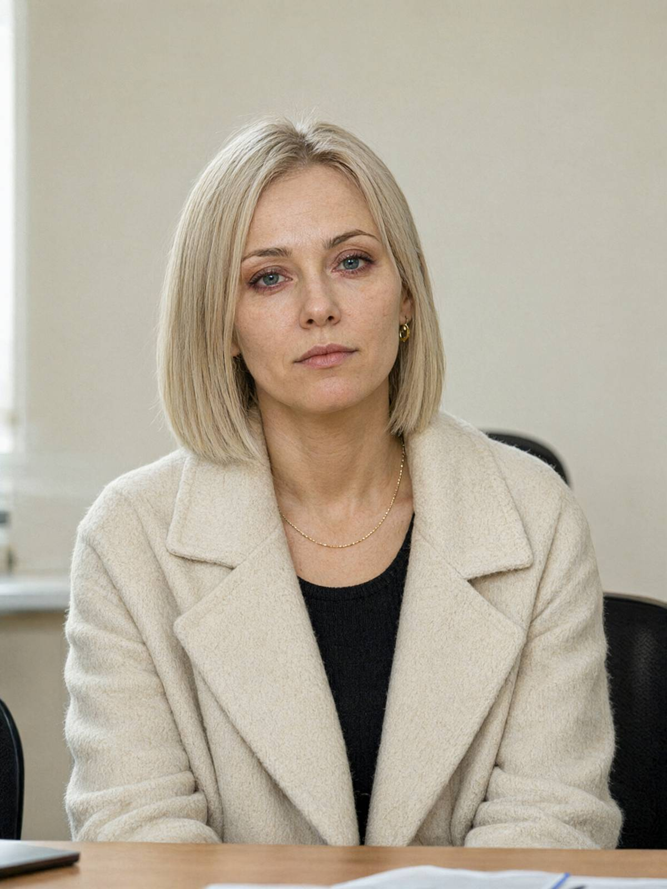

м. Івано-Франківськ, 16 жовтня 2026 року, 15:10–15:55
Місце: СУ ГУНП в Івано-Франківській області, кабінет № 407
Пояснення відібрав: майор поліції Волков Д.С., старший слідчий в ОВС СУ ГУНП в Івано-Франківській області, у кримінальному провадженні № 12026090010002417.
Особа, що дає пояснення: Палійчук Інна Олегівна, 39 років, директорка з маркетингу ТОВ «Чорне зерно». Проживає: м. Івано-Франківськ, вул. Пасічна, 41, ЖК «Дем'янів лаз», секція 3, кв. 128. Тел. +380 50 433 17 26. Дружина загиблого.
Роз'яснення прав. Роз'яснено, що відповідно до ст. 63 Конституції України особа не зобов'язана давати пояснення щодо себе, членів своєї сім'ї та близьких родичів; пояснення дається добровільно. Від адвоката відмовилася: «Поки що».
Питання: Де ви перебували 14–16 жовтня?
У Буковелі. З чотирнадцятого. Відпочивала з подругою Наталкою. Мені подзвонили зранку з вашої чергової частини, я одразу виїхала. Три години за кермом, і весь час думала, що це якась помилка.
Питання: Назвіть, будь ласка, прізвище й номер телефону подруги.
Не впутуйте її. Вона тут ні до чого. (Прізвище подруги назвати відмовилася.)
Питання: Коли ви востаннє спілкувалися з чоловіком?
Він подзвонив мені ввечері, десь о пів на десяту, і сказав: "Не чекай мене з вихідними. Завтра все скінчиться". І поклав слухавку. Ні «привіт», ні «як ти». Я подумала, що він про розлучення. Що він нарешті наважився.
Питання: Чому ви так подумали?
Бо останні тижні він кудись ходив вечорами. Я думала — жінка. Повертався пізно, телефон клав екраном донизу, на питання відповідав «потім». Ми одружені з вісімнадцятого року, я знаю, як він бреше: він не бреше, він мовчить. От він і мовчав.
Питання: Він не уточнив, що саме «скінчиться»?
Ні. «Потім поясню» — і все. Я перепитувати не стала. Гордість, якщо хочете. Тепер уже не пояснить.
Питання: Чим ви займаєтеся в компанії? Чи відомо вам про фінансові проблеми, борги, конфлікти?
Я відповідаю за маркетинг: бренд, соцмережі, відкриття кав'ярень, упаковка. Гроші — то бухгалтерія, Ольга Степанівна. До рахунків я доступу не маю і не хотіла мати. Конфлікти? Він у кожному бізнесі з кимось сперечався — то з постачальниками, то з орендодавцями, то з Маланюком через паркінг. Нічого такого, за що вбивають.
Питання: Що вам відомо про благодійний фонд «Родина»?
Якась його благодійність, я не цікавилась. Здається, вони щось для залежних роблять. Їхній логотип у нас на сайті в «партнерах», бо Василь так захотів. Я заперечувала — дизайну не пасує.
Питання: Чи знаєте ви Яковишин Світлану Петрівну?
Бабу Світу? Звісно. Він їй щоранку носив каву, п'ять років. Я жартувала, що з нею він бачиться частіше, ніж зі мною. Це був не дуже смішний жарт.
Питання: Чи є у вас спільні діти? Чи укладали ви шлюбний договір?
Спільних дітей нема. Шлюбного договору не маємо. Я розумію, до чого це питання. Так, я спадкоємиця. Можете записати, що мені від цього не легше.
Питання: Ви могли б назвати людей, які бажали йому зла?
Ні. Він був… (довга пауза) Він був нормальний. Важкий, впертий, але нормальний. Він каву пробував зранку в усіх чотирнадцяти кав'ярнях по фото з телефону, щоб пінка була однакова. Хто таких вбиває?
Наприкінці розмови особа заплакала, попросила перерву на п'ять хвилин. Після перерви доповнень не мала.
Зі слів записано вірно, мною прочитано. Зауважень не маю.